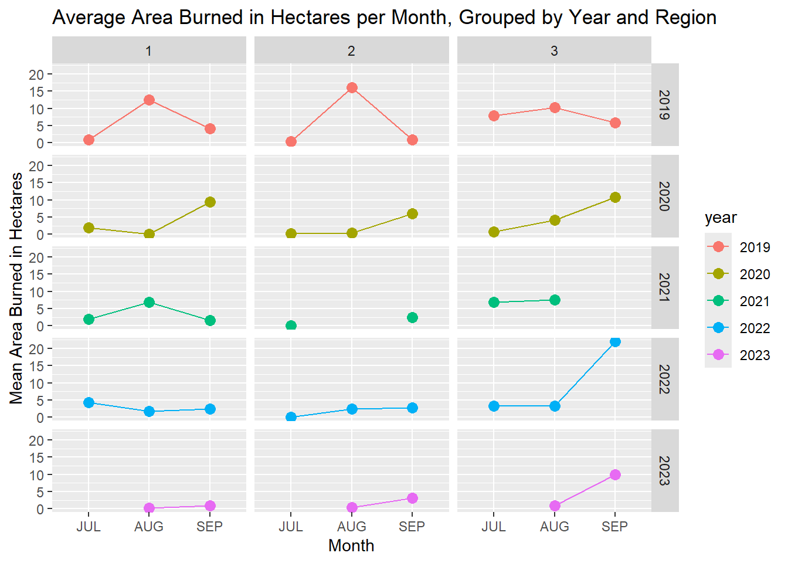
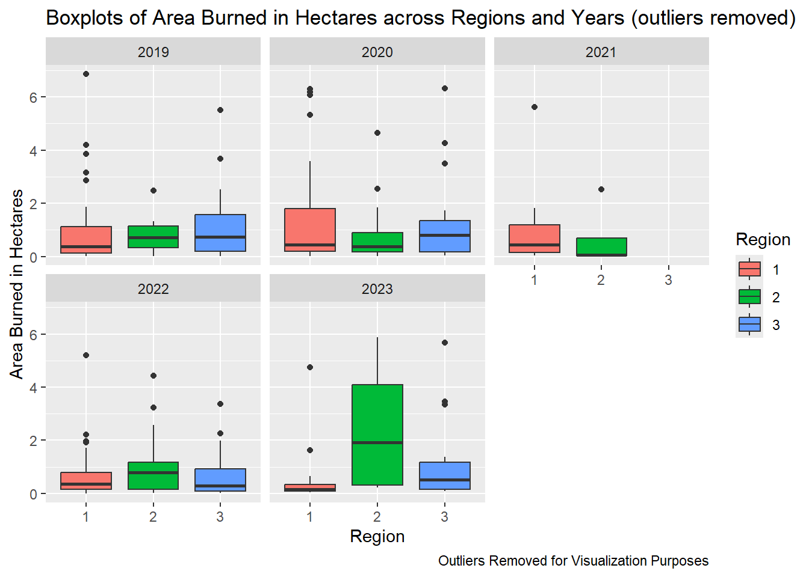

── Conflicts ────────────────────────────────────────── tidyverse_conflicts() ──
✖ dplyr::filter() masks stats::filter()
✖ dplyr::lag() masks stats::lag()
✖ dplyr::select() masks MASS::select()
ℹ Use the conflicted package (<http://conflicted.r-lib.org/>) to force all conflicts to become errors
data <-read_csv("actual_data_merge (1).csv")
New names:
Rows: 1282 Columns: 56
── Column specification
──────────────────────────────────────────────────────── Delimiter: "," chr
(3): Name, Category, geometry dbl (52): ...1, ID, NEAR_DIST, Interview,
Shape_Leng, Shape_Area, Region, AU... lgl (1): JUL_2023
ℹ Use `spec()` to retrieve the full column specification for this data. ℹ
Specify the column types or set `show_col_types = FALSE` to quiet this message.
• `` -> `...1`
Adding new variable - takes on 1 if a fire occured, 0 if not:
bernoulli <- data |>mutate(fire =ifelse(total_fires >0,1,0))#View(bernoulli)
Trying with bernoulli data:
Data Analysis
library(ggplot2)
Tables
Count of fire occurrence by region
region_fire <-table(bernoulli$Region, bernoulli$fire)dimnames(region_fire) <-list("Region"=c("1", "2", "3"),"Occurence of at least one fire"=c("No", "Yes"))region_fire
Occurence of at least one fire
Region No Yes
1 291 85
2 417 61
3 367 61
Region and Category counts
data3 <- bernoullitable(data3$Region, data3$Category, dnn=c("Region","Name of Category"))
Name of Category
Region Agropolis Agrovila Crossroad Ruropolis
1 39 267 70 0
2 69 404 5 0
3 55 326 8 39
Bar Graphs
df <-as.data.frame(region_fire)ggplot(df, aes(x = Region, y = Freq, fill = Occurence.of.at.least.one.fire)) +geom_bar(stat ="identity", position ="dodge") +labs(title ="Occurrence of Fire by Region",x ="Region",y ="Count",fill ="Occurrence of Fire") +scale_fill_manual(values =c("No"="skyblue", "Yes"="maroon"))
Region 1 appears to have the most fires. We should note that this graph looks skewed because
ggplot(percent, aes(x = Region, y = percent, fill = Region)) +geom_bar(stat ="identity") +labs(title ="Percentage of Relative Fire Occurences by Region",x ="Region",y ="Percentage")
Plots
Average hectacre of burned area, grouped by region, over time.
`summarise()` has grouped output by 'Region'. You can override using the
`.groups` argument.
head(year_summary)
# A tibble: 6 × 3
# Groups: Region [2]
Region year mean_area_burned
<fct> <chr> <dbl>
1 1 2019 5.26
2 1 2020 7.12
3 1 2021 2.18
4 1 2022 2.47
5 1 2023 0.592
6 2 2019 5.89
head(month_summary)
# A tibble: 6 × 4
# Groups: Region, year [2]
Region year month mean_area_burned
<fct> <chr> <fct> <dbl>
1 1 2019 JUL 0.831
2 1 2019 AUG 12.6
3 1 2019 SEP 4.12
4 1 2020 JUL 2.01
5 1 2020 AUG 0.0979
6 1 2020 SEP 9.35
ggplot(year_summary, aes(x = year, y = mean_area_burned, color = Region, group = Region)) +geom_point(size =3) +geom_line() +labs(title ="Average Area Burned per Year, Grouped by Region")
ggplot(month_summary, aes(x = month, y = mean_area_burned, color = year, group = year)) +geom_point(size =3) +geom_line() +facet_grid(year ~ Region) +labs(title ="Average Area Burned per Month, Grouped by Year and Region")
Warning: Removed 5 rows containing missing values or values outside the scale range
(`geom_point()`).
Warning: Removed 2 rows containing missing values or values outside the scale range
(`geom_line()`).
Boxplots
pivot_filtered <- pivot |>filter(!is.na(area_burned))ggplot(pivot_filtered, aes(x = Region, y = area_burned, fill = Region)) +geom_boxplot() +facet_wrap(~ year)
ggplot(boxplot_no_outliers, aes(x = Region, y = area_burned, fill = Region)) +geom_boxplot() +facet_wrap(~ year)
ggplot(boxplot_no_outliers, aes(x = month, y = area_burned, fill = month)) +geom_boxplot()

ggplot(boxplot_no_outliers, aes(x = area_burned)) +geom_histogram(bins =20, fill ="lightblue", color ="black") +labs(title ="Histogram of Area Burned", x ="Area Burned", y ="Frequency") +facet_wrap(~ month)
Models
Only main effect for all terms
model_string <-textConnection("model{ for (i in 1:length(y)) { y[i] ~ dbern(p[i]) logit(p[i]) = beta0 + beta1*x1[i] + beta2*x2[i] + beta3*x3[i] + beta4*x4[i] } #Uninformative Priors: beta0 ~ dnorm(0 ,1/(10)^2 ) beta1 ~ dnorm(0, 1/(10)^2) beta2 ~ dnorm(0, 1/(10)^2) beta3 ~ dnorm(0, 1/(10)^2) beta4 ~ dnorm(0, 1/(10)^2)}")# Dr. Reich does not standardize the data, but other resource doesdata_jags =list(y=bernoulli$fire, x1 = bernoulli$NEAR_DIST, x2 = bernoulli$Shape_Leng, x3 = bernoulli$Shape_Area, x4 = bernoulli$Region)model <-jags.model(model_string,data = data_jags, n.chains=3,quiet=TRUE)update(model, 100, progress.bar="none")params <-c("beta0", "beta1","beta2","beta3","beta4")samples <-coda.samples(model, variable.names=params, n.iter=1000, progress.bar="none")summary(samples)
Iterations = 1101:2100
Thinning interval = 1
Number of chains = 3
Sample size per chain = 1000
1. Empirical mean and standard deviation for each variable,
plus standard error of the mean:
Mean SD Naive SE Time-series SE
beta0 -2.374e+00 3.825e-01 6.984e-03 5.434e-02
beta1 2.450e-02 1.210e-02 2.209e-04 7.548e-04
beta2 1.253e-04 7.068e-05 1.290e-06 9.920e-06
beta3 1.325e-07 8.831e-08 1.612e-09 9.504e-09
beta4 -1.781e-01 1.020e-01 1.862e-03 7.887e-03
2. Quantiles for each variable:
2.5% 25% 50% 75% 97.5%
beta0 -3.175e+00 -2.611e+00 -2.353e+00 -2.120e+00 -1.664e+00
beta1 -3.661e-04 1.662e-02 2.502e-02 3.267e-02 4.761e-02
beta2 3.244e-06 7.300e-05 1.193e-04 1.714e-04 2.744e-04
beta3 -4.271e-08 7.187e-08 1.353e-07 1.958e-07 2.973e-07
beta4 -3.774e-01 -2.485e-01 -1.793e-01 -1.073e-01 2.369e-02
# Compute DIC - n.iter needs to be the same above and belowDIC <-dic.samples(model,n.iter=1000,n.thin =5, progress.bar="none")DIC
Mean deviance: 1059
penalty 4.797
Penalized deviance: 1064
# Combine results from 3 different chains into one by stacking matrices that contain simulations.mod1_csim =as.mcmc(do.call(rbind, samples))# Extract posterior mean of coefficientspm_coef =colMeans(mod1_csim)# The matrix multiplication below gives the exponentiation part in equation which will then be used to find estimated probabilities.predictors <-matrix(c(bernoulli$NEAR_DIST, bernoulli$Shape_Leng, bernoulli$Shape_Area, bernoulli$Region), nrow =1282, ncol =4)pm_Xb = pm_coef["beta0"] + predictors %*% pm_coef[1:4] # Intercept + Design Matrix*Coefficients# extract probability (basically undo logit link)phat =1.0/ (1.0+exp(-pm_Xb)) # Predicted probabilities that the Outcome = 1 for each observationsplot(phat, jitter(bernoulli$fire))

(tab0.5 =table(phat >0.5, bernoulli$fire))
0 1
FALSE 22 3
TRUE 1053 204
Main effects of first three vars
model_string2 <-textConnection("model{ for (i in 1:length(y)) { y[i] ~ dbern(p[i]) logit(p[i]) = beta0 + beta1*x1[i] + beta2*x2[i] + beta3*x3[i] } #Uninformative Priors: beta0 ~ dnorm(0 ,1/(10)^2 ) beta1 ~ dnorm(0, 1/(10)^2) beta2 ~ dnorm(0, 1/(10)^2) beta3 ~ dnorm(0, 1/(10)^2)}")# Dr. Reich does not standardize the data, but other resource doesdata_jags2 =list(y=bernoulli$fire, x1 = bernoulli$NEAR_DIST, x2 = bernoulli$Shape_Leng, x3 = bernoulli$Shape_Area)model2 <-jags.model(model_string2,data = data_jags2, n.chains=3,quiet=TRUE)update(model2, 100, progress.bar="none")params2 <-c("beta0", "beta1","beta2","beta3")samples2 <-coda.samples(model2, variable.names=params2, n.iter=1000, progress.bar="none")summary(samples2)
Iterations = 1101:2100
Thinning interval = 1
Number of chains = 3
Sample size per chain = 1000
1. Empirical mean and standard deviation for each variable,
plus standard error of the mean:
Mean SD Naive SE Time-series SE
beta0 -2.968e+00 2.851e-01 5.205e-03 2.948e-02
beta1 2.842e-02 1.148e-02 2.095e-04 6.913e-04
beta2 1.796e-04 6.835e-05 1.248e-06 9.581e-06
beta3 7.317e-08 8.545e-08 1.560e-09 8.398e-09
2. Quantiles for each variable:
2.5% 25% 50% 75% 97.5%
beta0 -3.542e+00 -3.163e+00 -2.966e+00 -2.775e+00 -2.423e+00
beta1 5.956e-03 2.050e-02 2.831e-02 3.617e-02 5.128e-02
beta2 4.845e-05 1.308e-04 1.774e-04 2.284e-04 3.109e-04
beta3 -8.886e-08 1.463e-08 7.027e-08 1.300e-07 2.483e-07
# Compute DIC - n.iter needs to be the same above and belowDIC2 <-dic.samples(model2,n.iter=1000,n.thin =5, progress.bar="none")DIC2
Mean deviance: 1061
penalty 3.771
Penalized deviance: 1065
That raised DIC slightly….
So let’s try model with main effects for NEAR_DIST, shape length, and region
Main effects of x1, x2, and x4
model_string3 <-textConnection("model{ for (i in 1:length(y)) { y[i] ~ dbern(p[i]) logit(p[i]) = beta0 + beta1*x1[i] + beta2*x2[i] + beta3*x4[i] } #Uninformative Priors: beta0 ~ dnorm(0 ,1/(10)^2 ) beta1 ~ dnorm(0, 1/(10)^2) beta2 ~ dnorm(0, 1/(10)^2) beta3 ~ dnorm(0, 1/(10)^2)}")# Dr. Reich does not standardize the data, but other resource doesdata_jags3 =list(y=bernoulli$fire, x1 = bernoulli$NEAR_DIST, x2 = bernoulli$Shape_Leng, x4 = bernoulli$Region)model3 <-jags.model(model_string3,data = data_jags3, n.chains=3,quiet=TRUE)update(model3, 100, progress.bar="none")params3 <-c("beta0", "beta1","beta2","beta3")samples3 <-coda.samples(model3, variable.names=params3, n.iter=1000, progress.bar="none")summary(samples3)
Iterations = 1101:2100
Thinning interval = 1
Number of chains = 3
Sample size per chain = 1000
1. Empirical mean and standard deviation for each variable,
plus standard error of the mean:
Mean SD Naive SE Time-series SE
beta0 -2.7553549 0.3351690 6.119e-03 4.205e-02
beta1 0.0243416 0.0118825 2.169e-04 7.392e-04
beta2 0.0002209 0.0000323 5.898e-07 2.242e-06
beta3 -0.1442038 0.0982130 1.793e-03 8.164e-03
2. Quantiles for each variable:
2.5% 25% 50% 75% 97.5%
beta0 -3.3975242 -2.9863746 -2.7651591 -2.5410474 -2.0669048
beta1 -0.0004262 0.0165536 0.0244674 0.0324021 0.0470391
beta2 0.0001573 0.0001998 0.0002202 0.0002428 0.0002868
beta3 -0.3402165 -0.2108428 -0.1393881 -0.0784966 0.0460610
# Compute DIC - n.iter needs to be the same above and belowDIC3 <-dic.samples(model3,n.iter=1000,n.thin =5, progress.bar="none")DIC3
Mean deviance: 1060
penalty 3.868
Penalized deviance: 1064
Main effects of x1 and x2
model_string4 <-textConnection("model{ for (i in 1:length(y)) { y[i] ~ dbern(p[i]) logit(p[i]) = beta0 + beta1*x1[i] + beta2*x2[i] } #Uninformative Priors: beta0 ~ dnorm(0 ,1/(10)^2 ) beta1 ~ dnorm(0, 1/(10)^2) beta2 ~ dnorm(0, 1/(10)^2)}")# Dr. Reich does not standardize the data, but other resource doesdata_jags4 =list(y=bernoulli$fire, x1 = bernoulli$NEAR_DIST, x2 = bernoulli$Shape_Leng)model4 <-jags.model(model_string4,data = data_jags4, n.chains=3,quiet=TRUE)update(model4, 100, progress.bar="none")params4 <-c("beta0", "beta1","beta2")samples4 <-coda.samples(model4, variable.names=params4, n.iter=1000, progress.bar="none")summary(samples4)
Iterations = 1101:2100
Thinning interval = 1
Number of chains = 3
Sample size per chain = 1000
1. Empirical mean and standard deviation for each variable,
plus standard error of the mean:
Mean SD Naive SE Time-series SE
beta0 -3.0990700 2.113e-01 3.857e-03 1.564e-02
beta1 0.0277867 1.136e-02 2.074e-04 6.176e-04
beta2 0.0002255 3.269e-05 5.969e-07 2.264e-06
2. Quantiles for each variable:
2.5% 25% 50% 75% 97.5%
beta0 -3.4985769 -3.2444657 -3.0957116 -2.9583834 -2.67343
beta1 0.0048955 0.0199480 0.0278047 0.0352880 0.05048
beta2 0.0001619 0.0002039 0.0002249 0.0002465 0.00029
# Compute DIC - n.iter needs to be the same above and belowDIC4 <-dic.samples(model4,n.iter=1000,n.thin =5, progress.bar="none")DIC4
Mean deviance: 1061
penalty 3.057
Penalized deviance: 1064